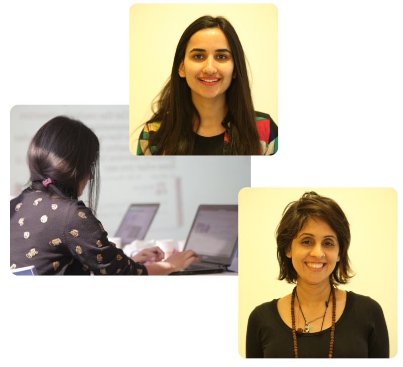
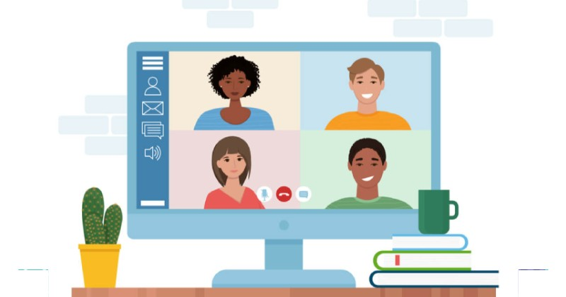

Get trained remotely to find a job in tech and pay no tuition until you are hired.
Microsoft, Google, Facebook and many of the other big companies have completed shifted to online work model and now they are hiring workers from all around the world for these new jobs.
According to World Economic Forum there is a rising need of talent such as data analysts and scientists, AI and ML specialists, robotics engineers, software and application developers, etc
There is research that proves that remote work is good for mental health. Remote work helps you spend more time with your family and also helps you prioritise your emotions.
There is so much out there to learn so Millennials and Gen-Z are adopting this lifestyle to learn and work while also building a great lifestyle that mixes with their goals and interests.
Here are some of the benefits of our program:
Neve | Powered by WordPress